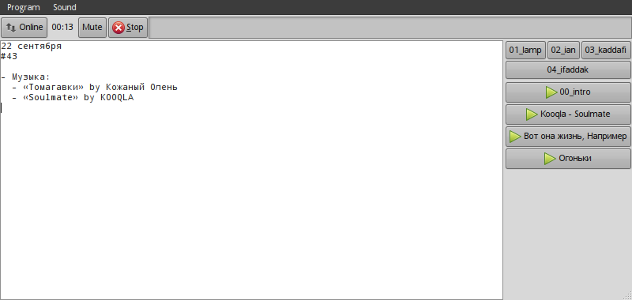

YABC is a GTK application which assists in streaming to an icecast server. It lets you read and edit the shownotes, play songs and jingles, mute the microphone and that's it. No cross-fading or other DJ stuff. Very simple and takes no resources.
There are IDJC and MuSE already, but they need many resources. For example, on an Asus EEE PC 1005 netbook IDJC takes about 50% of CPU time; if you need to have a Skype conference with two people, you're out of resources, the sound starts clicking. YABC takes zero resources, only simplifies things.
YABC does not deal with the sound and does not stream on its own. It uses mplayer to play audio files in the background and darkice to send the stream to the server. You will also need JACK to properly connect parts of the stream.
When you mute or unmute, a script is executed which modifies JACK connections. When you connect or disconnect, a script is executed which starts or kills darkice. That's it. The UNIX way.